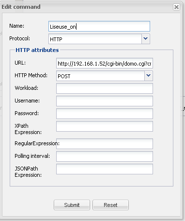

Hi,
I've got this in log when acting a HTTP protocole command through panel:
2012-08-15 15:27:09,587 ERROR HTTP\-Thread\-86: HttpGetCommand could not execute
org.apache.http.client.ClientProtocolException
at org.apache.http.impl.client.AbstractHttpClient.execute(AbstractHttpClient.java:643)
at org.apache.http.impl.client.AbstractHttpClient.execute(AbstractHttpClient.java:731)
at org.apache.http.impl.client.AbstractHttpClient.execute(AbstractHttpClient.java:709)
at org.apache.http.impl.client.AbstractHttpClient.execute(AbstractHttpClient.java:700)
at org.openremote.controller.protocol.http.HttpGetCommand.requestURL(HttpGetCommand.java:180)
at org.openremote.controller.protocol.http.HttpGetCommand.send(HttpGetCommand.java:140)
at org.openremote.controller.service.impl.ControlCommandServiceImpl.trigger(ControlCommandServiceImpl.java:95)
at org.openremote.controller.rest.ControlCommandRESTServlet.handleRequest(ControlCommandRESTServlet.java:77)
at org.openremote.controller.rest.RESTAPI.doPost(RESTAPI.java:125)
at javax.servlet.http.HttpServlet.service(HttpServlet.java:637)
at javax.servlet.http.HttpServlet.service(HttpServlet.java:717)
at org.apache.catalina.core.ApplicationFilterChain.internalDoFilter(ApplicationFilterChain.java:290)
at org.apache.catalina.core.ApplicationFilterChain.doFilter(ApplicationFilterChain.java:206)
at org.openremote.controller.rest.support.json.JSONCallbackFilter.doFilter(JSONCallbackFilter.java:63)
at org.apache.catalina.core.ApplicationFilterChain.internalDoFilter(ApplicationFilterChain.java:235)
at org.apache.catalina.core.ApplicationFilterChain.doFilter(ApplicationFilterChain.java:206)
at org.springframework.web.filter.CharacterEncodingFilter.doFilterInternal(CharacterEncodingFilter.java:78)
at org.springframework.web.filter.OncePerRequestFilter.doFilter(OncePerRequestFilter.java:77)
at org.apache.catalina.core.ApplicationFilterChain.internalDoFilter(ApplicationFilterChain.java:235)
at org.apache.catalina.core.ApplicationFilterChain.doFilter(ApplicationFilterChain.java:206)
at org.apache.catalina.core.StandardWrapperValve.invoke(StandardWrapperValve.java:233)
at org.apache.catalina.core.StandardContextValve.invoke(StandardContextValve.java:191)
at org.apache.catalina.core.StandardHostValve.invoke(StandardHostValve.java:128)
at org.apache.catalina.valves.ErrorReportValve.invoke(ErrorReportValve.java:102)
at org.apache.catalina.core.StandardEngineValve.invoke(StandardEngineValve.java:109)
at org.apache.catalina.connector.CoyoteAdapter.service(CoyoteAdapter.java:286)
at org.apache.coyote.http11.Http11Processor.process(Http11Processor.java:845)
at org.apache.coyote.http11.Http11Protocol$Http11ConnectionHandler.process(Http11Protocol.java:583)
at org.apache.tomcat.util.net.JIoEndpoint$SocketProcessor.run(JIoEndpoint.java:354)
at java.util.concurrent.ThreadPoolExecutor$Worker.runTask(ThreadPoolExecutor.java:886)
at java.util.concurrent.ThreadPoolExecutor$Worker.run(ThreadPoolExecutor.java:908)
at java.lang.Thread.run(Thread.java:619)
Caused by: org.apache.http.ProtocolException: The server failed to respond with a valid HTTP response
at org.apache.http.impl.conn.DefaultResponseParser.parseHead(DefaultResponseParser.java:109)
at org.apache.http.impl.io.AbstractMessageParser.parse(AbstractMessageParser.java:210)
at org.apache.http.impl.AbstractHttpClientConnection.receiveResponseHeader(AbstractHttpClientConnection.java:271)
at org.apache.http.impl.conn.DefaultClientConnection.receiveResponseHeader(DefaultClientConnection.java:227)
at org.apache.http.impl.conn.AbstractClientConnAdapter.receiveResponseHeader(AbstractClientConnAdapter.java:209)
at org.apache.http.protocol.HttpRequestExecutor.doReceiveResponse(HttpRequestExecutor.java:292)
at org.apache.http.protocol.HttpRequestExecutor.execute(HttpRequestExecutor.java:126)
at org.apache.http.impl.client.DefaultRequestDirector.execute(DefaultRequestDirector.java:483)
at org.apache.http.impl.client.AbstractHttpClient.execute(AbstractHttpClient.java:641)
... 31 more
The command is however correctly executed.
Here is the "Edit command" window :

The whole line URL is "http://192.168.1.52/cgi-bin/domo.cgi?cmd=ON A5 P3"
I've applicated the correction from this post to correct previous errors due to invalid space caractere.
Extract (wrote by Markus Redecker):
The HttpGetCommand needs an URI and that needs to have URL parameter to be encoded.
I am using a differen URI constructor now which encodes the parameter.
Please replace the 2 attached files at this location "openremote-controller/webapps/controller/WEB-INF/classes/org/openremote/controller/protocol/http" and give it a try.
HttpGetCommandBuilder.class
HttpGetCommand.class
I should not worry because the command is working fine, but this make lots of lines in logs and is not, to my point of view, a correct answer.
Thanks for help and explanations.
Jack.
{kind=link}
{kind=link}
{kind=link}
|
Some server act funny when the User-Agent header is not set which could cause this message. If you still receive the exception please post the stacktrace again. |
|
Hi, Marcus Thanks for answering so quickly. I've tried and cried Here you can find the logs (zip file). The problem is still present (see end of dev.log), I did 4 http commands. See also boot.log : server seems to have a weird behavior??? Lots of lines like this one, may be due to dev version:
There are also errors with zwave
I'm back at 2.0.0 version and still ready to test new versions. I keep V.2.0.1 in the cormer. Jack |
|
Thanks for reporting. The log levels were a little hight |
|
Do you mean something like Wireshark? |
|
Yes, or there are tools explicit for HTTP monitoring eg. http://www.charlesproxy.com/ |
|
Hi Marcus, I did a screenshot of wireshark : 192.168.1.96 is the adress of the pc where openremote server is running and 192.168.1.52 is the adress of the command interpreter and RF433 emitter known as Zibase. as we can see :
So I don't know if this will help you and be enough to resolve the problem. Ask for more if needed. Regards Jack |
|
It looks like zibase just sends back "ok" and no valid HTTP answer. What do you get when you call your URL from a browser? |
{kind=link}